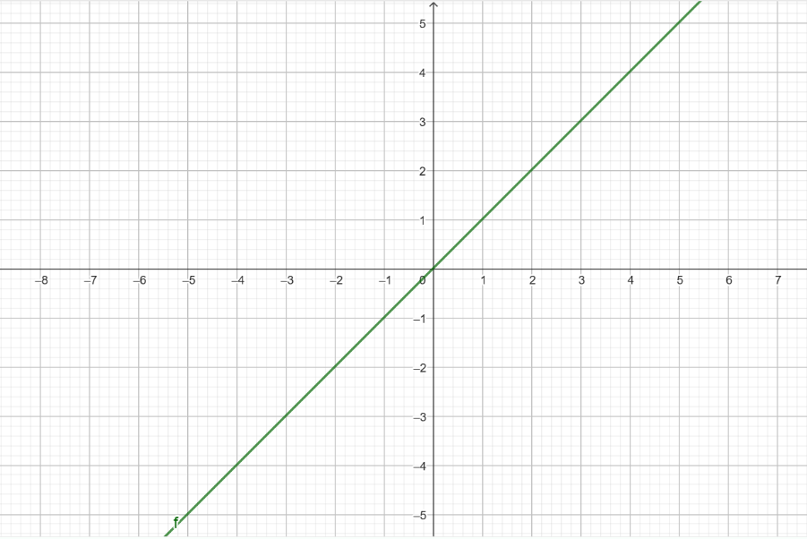
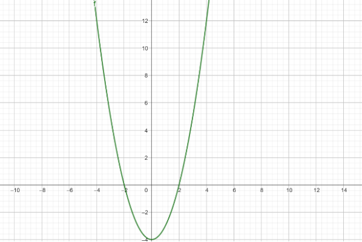
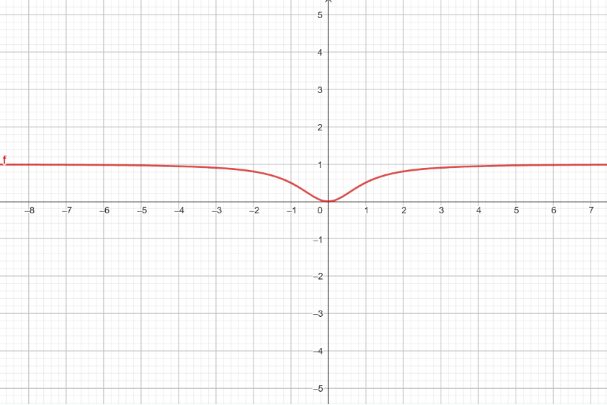
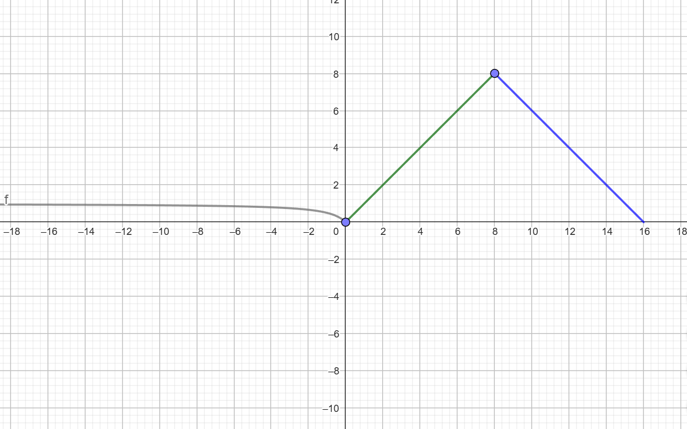
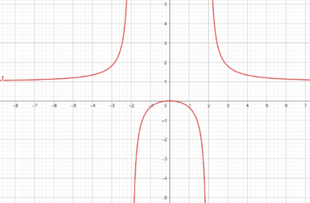
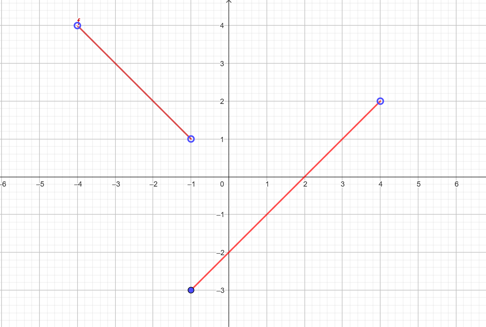
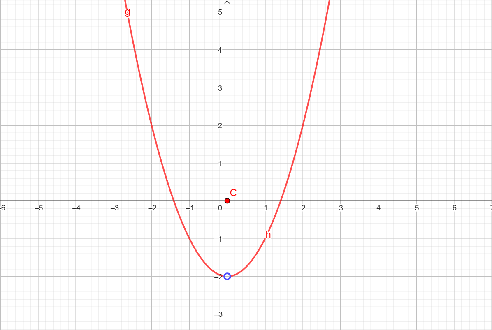
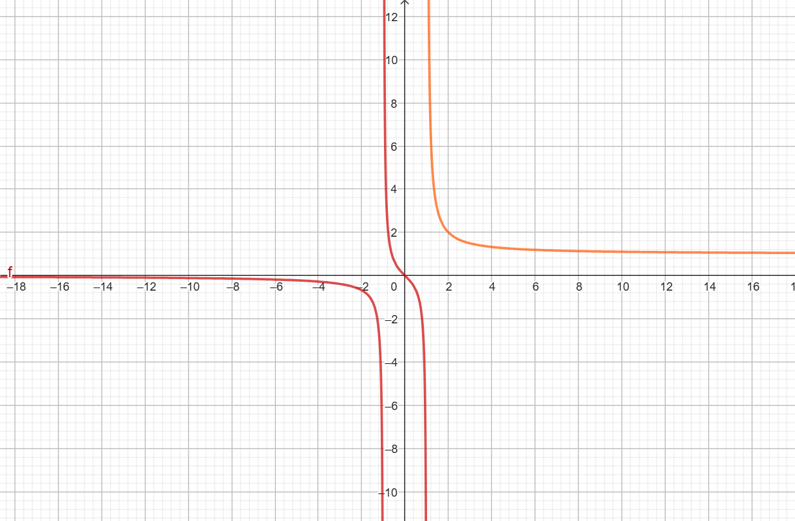
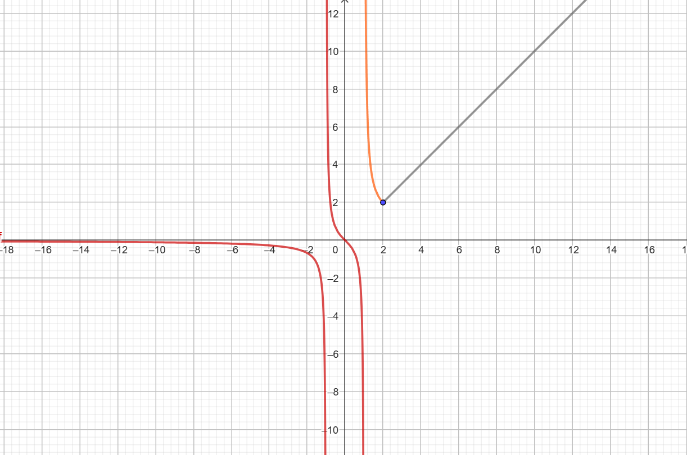

Sigamos con las características
Ya hemos estudiado qué son y cómo se calculan el dominio y recorrido de una función.
Ahora vamos a estudiar una característica de las funciones que está íntimamente ligada al dominio de una función. Esta es la continuidad de una función.
Definición de continuidad
Intuitivamente, una función es continua si su gráfica se puede dibujar sin levantar el lápiz del papel. En
caso contrario, se producen “saltos” en determinados valores de la variable independiente que reciben
el nombre de discontinuidades.
Ejemplos de funciones continuas
Las siguientes gráficas son ejemplos de funciones continuas:
a) y = x

Autoría: Óscar Gómez Palomares. ©
b) f(x) = x2 - 4

Autoría: Óscar Gómez Palomares. ©
f(x) = x2/(x2+1)

Autoría: Óscar Gómez Palomares. ©
d) f(x) = x/(x-1) si x < 0
x si 0 ≤ x < 8
-x + 16 si 8 ≤ x < 16

Autoría: Óscar Gómez Palomares. ©
Ejemplos de funciones discontinuas
Las siguientes gráficas son ejemplos de funciones discontinuas:
a) y = x2/(x2-4)

Autoría: Óscar Gómez Palomares. ©
b) f(x) = -x si -4 < x < -1
x-2 si -1 ≤ x < 4

Autoría: Óscar Gómez Palomares. ©
c) f(x) = x2 - 4 si x < 0
0 si x = 0
x2 - 4 si x > 0

Autoría: Óscar Gómez Palomares. ©
d) f(x) = x/(x2-1) si x < 1
x/(x-1) si x > 1

Autoría: Óscar Gómez Palomares. ©
e) f(x) = x/(x2-1) si x < 1
x/(x-1) si 1 < x < 2
x si x ≥ 2

Autoría: Óscar Gómez Palomares. ©
Tipos de discontinuidades
Ya sabemos cuando una función es continua y cuando discontinua. Ahora vamos a diferenciar entre los 3 tipos de discontinuidades que existen, que ya los hemos visto, pero vamos a darles nombre:
- Discontinuidad evitable: un punto "no está dónde debería estar". La función tiene asignado un valor diferente del que debería en un punto concreto.
- Discontinuidad de salto finito: un punto divide dos ramas de la función. Justamente a la izquierda de un punto la función tiene un valor, y justamente a la derecha de ese punto tiene un valor diferente (aunque ambos valores son finitos).
- Discontinuidad de salto infinito: un punto divide dos ramas de la función. Justamente a la izquierda de un punto la función tiene un valor, y justamente a la derecha de ese punto tiene un valor diferente (aunque en este caso uno de las dos ramas, o las dos, se va a infinito).
EJEMPLOS CON GRÁFICAS ANTERIORES.